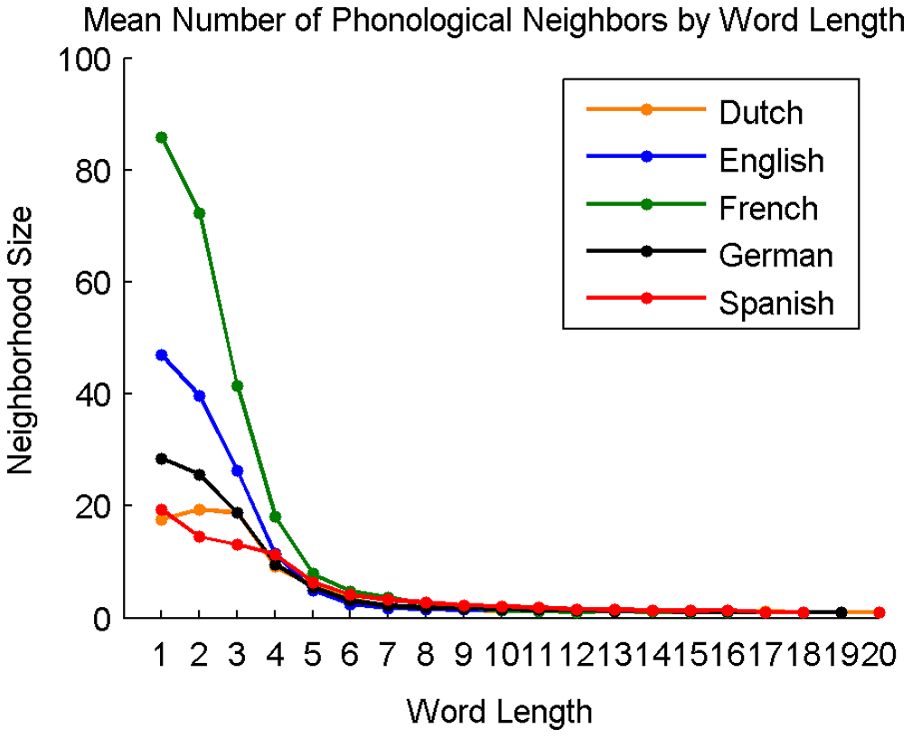
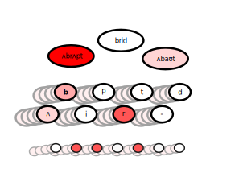

Recognising Words
Human Speech
Psychology, PPLS
University of Edinburgh
2025-02-13
- a bit of a rabbit hole!
Dall-E 3
Three Stories About Word Recognition
- Cohort Theory
- Interactive Theories
- Motor Theory
Cohorts
↓ top-down influences (context)
- recognition point
the poacher ignored the sign not to
t r e s p a s s
- uniqueness point
↑ bottom-up influences
Cohort Model
access
- candidate cohorts set up as quickly as possible
selection
- words actively eliminated by accruing evidence
integration
- selected word is used (syntax, semantics)
Cohort Reduction
Cohort Reduction
Allopenna et al. (1998)
Directly Testing Word Recognition
gating study
when can you confidently recognise the word?
- ~333ms to recognise a word
- ~199ms to recognise a word in context
Grosjean (1980)
Detailed Gating Findings
Grosjean (1980)
Neighbourhoods
- adding, deleting, or changing one phoneme1
| word | neighbours |
|---|---|
| grʌdʒ | grʌb grʌf grʌnʒ |
| bring | bridge buying brick brig bowing bling booing brim airing ring wring brings boring bearing brink brewing |
| abrupt | — |
Neighbourhoods
Marian et al. (2012)
Neighbourhood Effects
word recognition slowed down for denser neighbourhoods
frequent neighbours compete more than infrequent neighbours
even orthographic neighbourhoods can affect (speed up) spoken word recognition
- findings lead to modifications of cohort model
- findings also inform TRACE model
TRACE

McClelland & Elman (1986)
TRACE over time
McClelland & Elman (1986)
Full TRACE Architecture
TRACE activation
McClelland & Elman (1986)
The Motor Theory of Speech Perception
speech processing is special (unique to humans)
perceiving speech is perceiving the vocal gestures of the speaker
the motor system is necessary for perceiving speech
- chinchillas can discriminate speech sounds
Liberman & Mattingly (1985)
Motor Theory: Death and Rebirth
Stasenko et al. (2013)
- citations of Liberman et al. (1967)
A Little Motor Evidence

Möttönen & Watkins (2012)
- motor cortex must be involved in speech perception